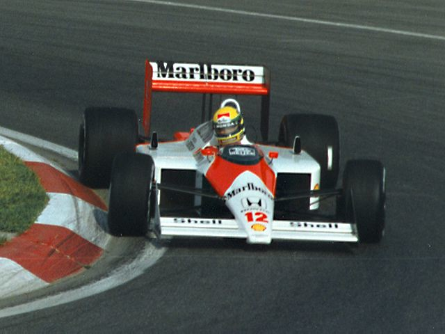
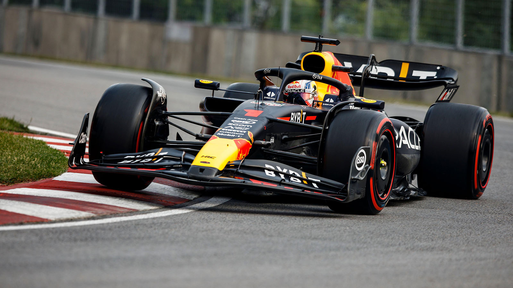
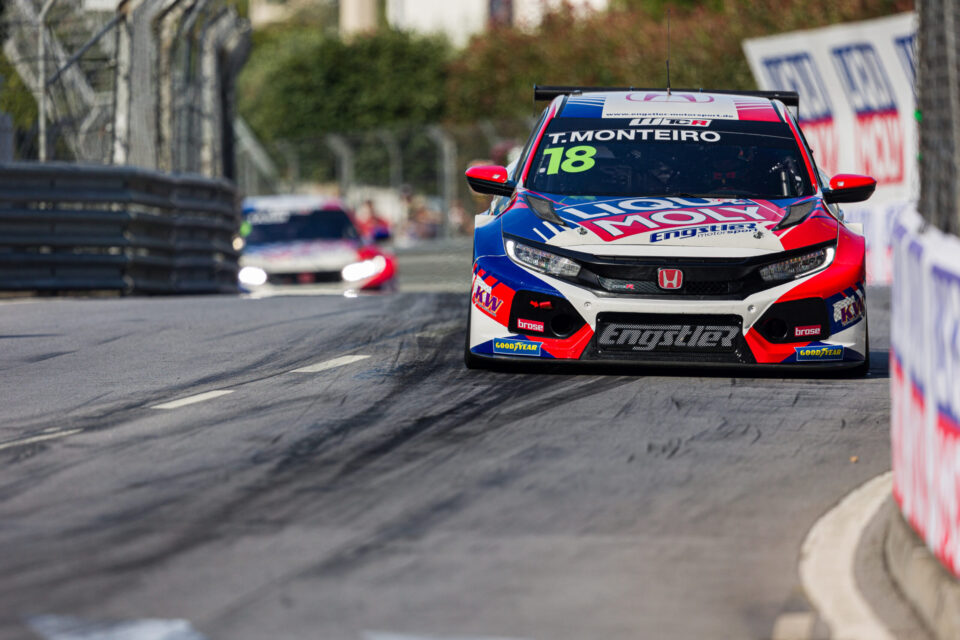
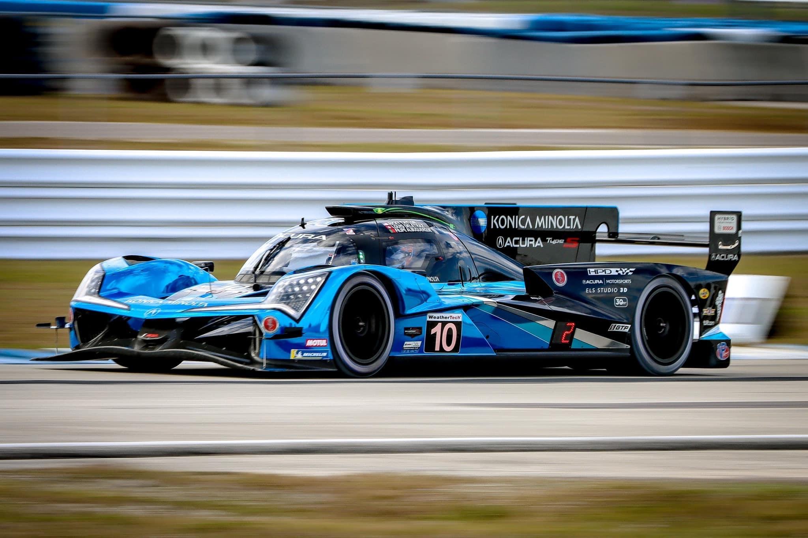
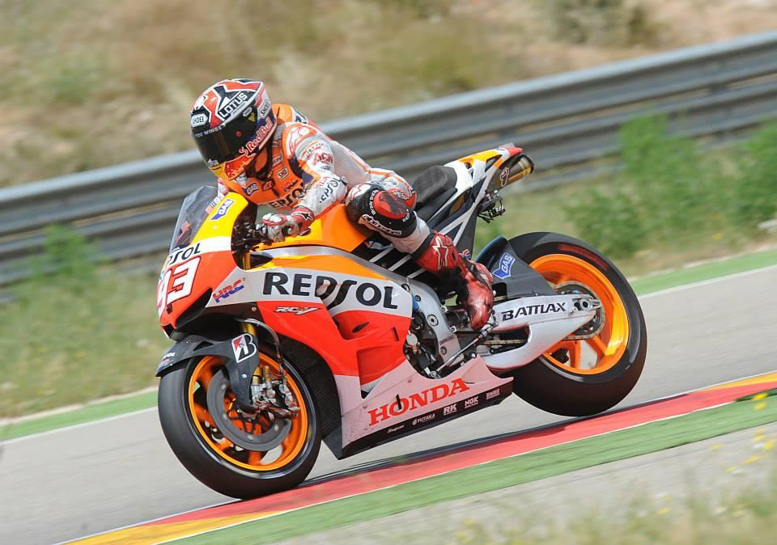

A Honda tem uma presença muito forte no mundo da competição automóvel e motociclística, participando em várias categorias ao longo da sua história e construindo uma reputação baseada em engenharia, fiabilidade e inovação tecnológica. Na Fórmula 1, a Honda teve momentos de grande destaque, especialmente durante a era turbo dos anos 80, onde os seus motores dominaram o campeonato e equiparam equipas lendárias como a McLaren e a Williams, contribuindo para títulos mundiais de pilotos como Ayrton Senna e Alain Prost. Após várias fases de entrada e saída da competição, a Honda regressou na era híbrida moderna, destacando-se novamente através da sua parceria com a Red Bull Racing, onde voltou a conquistar campeonatos mundiais, demonstrando a sua capacidade de adaptação às novas tecnologias da F1.  
Nos campeonatos de turismo, a Honda também marcou presença de forma consistente e muito competitiva. Modelos como o Civic e o Accord foram amplamente utilizados em competições como o JTCC no Japão, o BTCC no Reino Unido e o WTCC a nível mundial. Nos dias de hoje, o Civic Type R é uma referência absoluta nas categorias TCR, onde a Honda se destaca pelo equilíbrio dos seus chassis, fiabilidade e excelente desempenho em carros de tração dianteira, conseguindo competir ao mais alto nível contra outras marcas de renome.

Na área da resistência, a Honda tem participado sobretudo através da sua divisão americana Acura, com protótipos usados em campeonatos como o IMSA e projetos LMP2 e LMDh. Estes carros, como o Acura ARX, demonstram a capacidade da marca em desenvolver tecnologia híbrida e motores fiáveis para corridas de longa duração, enfrentando fabricantes como Toyota, Porsche e Cadillac em provas extremamente exigentes como as 24 Horas.

No motociclismo, a Honda é uma das marcas mais dominantes da história do desporto motorizado. No MotoGP e noutras categorias como Superbike e motocross, a marca conquistou inúmeros títulos mundiais com máquinas altamente competitivas como a RC213V. Pilotos lendários como Marc Márquez ajudaram a consolidar essa dominância, tornando a Honda uma referência absoluta em duas rodas, com uma presença constante no topo da competição. 
A Honda também tem envolvimento em categorias de desenvolvimento como a Fórmula 2 e Fórmula 3, apoiando a formação de novos pilotos e contribuindo para o desenvolvimento de tecnologia aplicada ao automobilismo. Embora tenha uma presença mais limitada no rally comparativamente a outras marcas, a sua engenharia influencia indiretamente a performance de muitos dos seus modelos de estrada e competição. No geral, a Honda construiu uma identidade muito forte no desporto motorizado, baseada em motores de alta rotação, inovação contínua e fiabilidade extrema. Essa experiência nas pistas reflete-se diretamente nos seus carros de estrada, especialmente nos modelos Type R, que herdam grande parte da filosofia de competição da marca.
Racing Hondas British Championship:
|